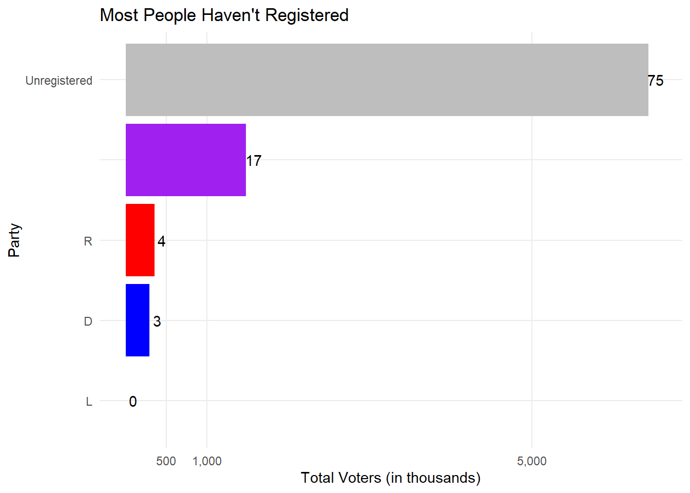

When we talk about Republicans and Democrats, it’s important to remember just how many more people are unaffiliated, and how many more don’t even register. Yes, there are more Republicans than Democrats, but a well-organized campaign in specific areas can reach a lot of people and have a big sway on the total votes.
Code
library(tidyverse)
── Attaching core tidyverse packages ──────────────────────── tidyverse 2.0.0 ──
✔ dplyr 1.1.3 ✔ readr 2.1.4
✔ forcats 1.0.0 ✔ stringr 1.5.0
✔ ggplot2 3.4.3 ✔ tibble 3.2.1
✔ lubridate 1.9.2 ✔ tidyr 1.3.0
✔ purrr 1.0.2
── Conflicts ────────────────────────────────────────── tidyverse_conflicts() ──
✖ dplyr::filter() masks stats::filter()
✖ dplyr::lag() masks stats::lag()
ℹ Use the conflicted package (<http://conflicted.r-lib.org/>) to force all conflicts to become errors
Code
library(arrow)
Attaching package: 'arrow'
The following object is masked from 'package:lubridate':
duration
The following object is masked from 'package:utils':
timestamp
Code
vote <-read_parquet('../../../SWVF_1_full.parquet') %>%mutate(age =2023-year(as_datetime(date_of_birth)),age_range =case_when(age <=25~'18-25', age <=40~'26-40', age <=64~'40-64', age >64~'65+'))vote[vote==''] <-' 'total_pop <-11756058*.728summary <- vote %>%group_by(party_affiliation) %>%summarise(count=n())unregistered <- total_pop -sum(summary$count)summary <- summary %>%add_row(party_affiliation ='Unregistered', count=unregistered)ggplot(summary,aes(y=reorder(party_affiliation,count),x=count,fill=party_affiliation,label=paste(round(count/total_pop,2)*100),'%'))+geom_col() +theme_minimal() +geom_text(nudge_x=90000) +scale_fill_manual(values=c('R'='red','D'='blue','L'='yellow',' '='purple'),na.value ='grey')+theme(legend.position='none',panel.grid.minor =element_blank()) +scale_x_continuous(breaks=c(500000,1000000,5000000),labels=c('500','1,000','5,000')) +labs(x='Total Voters (in thousands)',y='Party',title='Most People Haven\'t Registered')

Most national trends apply to Ohio too. People turn more conservative as they get older, younger people are less likely to register to vote, etc.
`summarise()` has grouped output by 'age_range'. You can override using the
`.groups` argument.
Code
age_sum$party_affiliation <-replace(age_sum$party_affiliation,values=c(' '='Unaffiliated','D'='Democrat','L'='Libertarian','R'='Republican'))party_order <-c("Unaffiliated", "Republican", "Democrat", "Libertarian")# Set the Party variable as a factor with the desired orderage_sum$party_affiliation <-factor(age_sum$party_affiliation, levels = party_order)f=ggplot(age_sum, aes(x=age_range,y=count,fill=party_affiliation,label=count)) +geom_col(position='dodge') +scale_fill_manual(values=c('Republican'='red','Democrat'='blue','Libertarian'='yellow','Unaffiliated'='purple'),na.value ='grey') +theme_minimal() +scale_y_continuous(breaks=c(100000,250000,500000),labels=c('100,000','250,000','500,000')) +labs(y='Number of Voters',x='Age Range',title='Affiliation by Age Range',fill='Party Affiliation')f %>% plotly::ggplotly()
If you want to see the full official registration, use the county breakdown below.